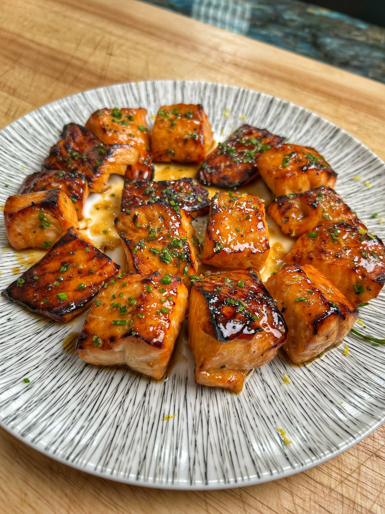

Seafood
Soy-Honey Salmon Candy Bites
A sticky, lacquered salmon bite built by fixing the usual problem: most glazes are watery and slide off fatty fish. Here the glaze is reduced first, cooled so it clings, then the salmon is roasted on a rack and finished with a butter-enriched version of the glaze.
Soy-Honey-Salmon-Candy-Bites
Seafood
Appetizer or Main
Category
Soy-Honey-Salmon-Candy-Bites
A sticky, lacquered salmon bite built by fixing the usual problem: most glazes are watery and slide off fatty fish. Here the glaze is reduced first, cooled so it clings, then the salmon is roasted on a rack and finished with a butter-enriched version of the glaze.

Serves
3–4 as a main, more as a party snack.
Glaze Ingredients
- 2 tbsp tamari
- 2–3 tbsp rice vinegar
- 2 tbsp honey
- 2 tbsp Worcestershire sauce
Salmon
- 1–2 lb boneless, skinless salmon fillet
- Kosher salt
To Finish
- 2 tbsp butter
- Fresh chives, thinly sliced
- Lime or lemon zest
Method
- Make the glaze. Add the tamari, rice vinegar, honey, and Worcestershire to a small saucepan. Bring to a simmer and cook until slightly thickened and syrupy—reduced but not as thick as molasses. It will tighten further in the oven. Pour into a bowl and let cool to room temperature (you can speed this up in the fridge).
- Prepare the salmon. Cut the salmon into large cubes, about 1 1/2 inches wide—big enough to stay juicy but small enough to lacquer well. Lightly season with kosher salt and let sit while the glaze cools so the salt can penetrate.
- Coat the salmon. Add a small amount of the cooled glaze to the salmon pieces and gently toss to coat. You want each piece covered, but not swimming in glaze.
- Set up the pan. Line a sheet pan with parchment paper. Place a wire rack on top of the parchment. Arrange the salmon pieces on the rack with space between each piece for good airflow.
- Glaze again. Brush a touch more glaze over each salmon cube.
- Roast. Roast in a 450°F oven for about 8–10 minutes. Look for bubbling glaze, browned edges, and centers that are just set but still moist. Pull the salmon before it overcooks.
- Finish the sauce. Take the remaining glaze in the bowl, bring it back to a simmer in the saucepan, and whisk in the butter. Swirl until glossy and emulsified into a sauce.
- Serve. Plate the salmon bites, drizzle with the butter-enriched glaze, and finish with fresh chives and citrus zest over the top.
Notes
- Roasting on a rack over parchment keeps the salmon from sitting in burnt sugar and promotes caramelization all around.
- Great as a main with rice and vegetables, or as a party bite; if serving guests, consider doubling the recipe.
- No seed oils here—tamari, butter, and the natural fat in the salmon carry the dish.
Summary: Reduce and cool the glaze first so it clings instead of burning on the pan, then finish the remaining glaze with butter for a shiny, restaurant-style sauce.